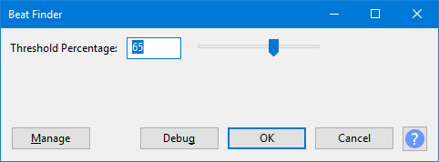

Beat Finder
Beat Finder attempts to place labels at beats which are much louder than the surrounding audio. It's a fairly rough and ready tool, and will not necessarily work well on a typical modern pop music track with compressed dynamic range.
- Accessed by:
- 
{kind=link}
Threshold Percentage
Sets the beat detection threshold. The default setting is 65%. The setting can be changed by typing directly into the box or by using the slider.
If you do not get enough beats detected, try reducing the "Threshold Percentage" setting.
Buttons
Clicking on the command buttons give the following results:
- gives a dropdown menu enabling you to manage presets for the tool and to see some detail about the tool. For details see Manage presets.
- plays a short preview of what the audio would sound like if the effect is applied with the current settings, without making actual changes to the audio. The length of preview is determined by your setting in , the default setting is 6 seconds.
- applies the effect to the selected audio with the current effect settings.
- aborts the effect and leaves the audio unchanged.
 brings you to the appropriate page in the Manual, this page.
brings you to the appropriate page in the Manual, this page.